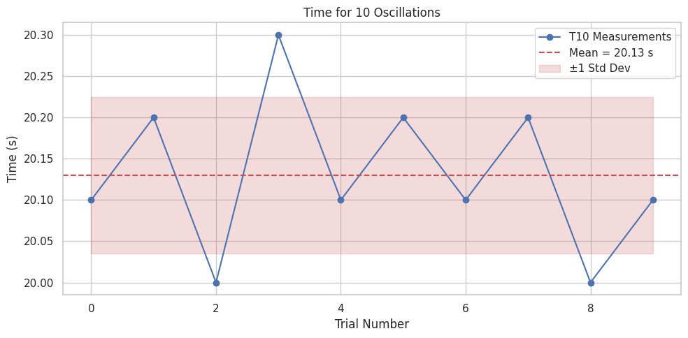

Problem 1
Thank you for sharing your task images. Based on the instructions and formulas shown in the pendulum experiment, here's a structured English summary with the appropriate formulas you’ll need to complete your work:
🧪 Experiment Title:
Measuring Earth’s Gravitational Acceleration Using a Pendulum
🎯 Objective:
To measure the acceleration due to gravity, \(g\), using a simple pendulum and to analyze the uncertainties in the measurements.
🔧 Materials Needed:
- A string (1 or 1.5 meters)
- A small weight (e.g., bag of coins)
- Stopwatch or smartphone timer
- Ruler or measuring tape
🛠️ Procedure Overview:
-
Set up the pendulum:
-
Attach the weight to one end of the string and fix the other end to a stable support.
- Measure the pendulum length, \(L\), from the suspension point to the center of mass of the weight.
-
Calculate length uncertainty:
$$ \Delta L = \frac{\text{Ruler Resolution}}{2} $$
-
Collect data:
-
Displace the pendulum slightly (under 15°) and release it.
- Measure the time for 10 full oscillations (\(T_{10}\)) and repeat this 10 times.
-
Calculate the mean time for 10 oscillations:
$$ \overline{T_{10}} = \frac{1}{10} \sum T_{10} $$ * Calculate the standard deviation, \(\sigma_T\), of the 10 trials. * Calculate uncertainty in mean time:
$$ \Delta T_{10} = \frac{\sigma_T}{\sqrt{n}} \quad \text{where } n = 10 $$
📐 Calculations:
- Calculate the Period \(T\):
$$ T = \frac{\overline{T_{10}}}{10} \quad ; \quad \Delta T = \frac{\Delta T_{10}}{10} $$
- Calculate the gravitational acceleration \(g\):
$$ g = \frac{4\pi^2 L}{T^2} $$
- Propagate the uncertainty \(\Delta g\):
$$ \Delta g = g \sqrt{\left( \frac{\Delta L}{L} \right)^2 + \left( 2 \cdot \frac{\Delta T}{T} \right)^2} $$
🔍 Analysis:
- Compare your measured value of \(g\) with the standard value: 9.81 m/s².
-
Discuss:
-
How ruler resolution affected \(\Delta L\).
- How timing variability affected \(\Delta T\).
- Possible experimental errors or assumptions (e.g., small angle approximation).
📊 Deliverables (in Markdown Table Format):
| Quantity | Symbol | Value | Uncertainty |
|---|---|---|---|
| Length of Pendulum | \(L\) | ... m | \(\Delta L\) |
| Time for 10 oscillations | \(T_{10}\) | ... s | \(\sigma_T\) |
| Period | \(T\) | ... s | \(\Delta T\) |
| Gravity | \(g\) | ... m/s² | \(\Delta g\) |

Sure! Here's a short explanation in English of the graph generated by the code:
🧾 Graph Explanation:
The graph shows the measured time for 10 oscillations over 10 trials.
- Blue dots and line: The actual time measurements recorded in each trial.
- Red dashed line: The mean value of the time measurements.
- Shaded red area: The ±1 standard deviation range, showing the spread (variation) of the data.